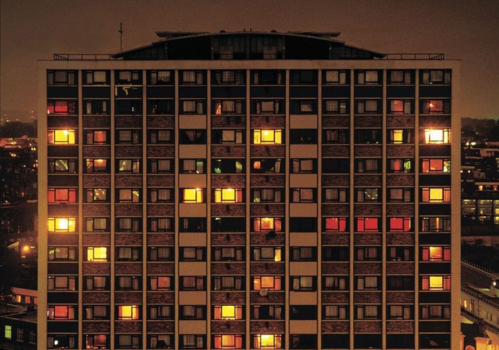

Anyone who works with computers learns to fear their capacity to forget. Like so many things with computers, memory is strictly binary. There is either perfect recall or total oblivion, with nothing in between. It doesn't matter how important or trivial the information is. The COMPUTER can forget anything in an instant. If it remembers, it remembers for keeps.

This doesn't map well onto human experience of memory, which is fuzzy. We don't remember anything with perfect fidelity, but we're also not at risk of waking up having forgotten our own name. Memories tend to fade with time, and we remember only the more salient events.

Every programmer has firsthand experience of accidentally deleting something important. Our folklore as programmers is filled with stories of lost data, failed backups, inadvertently clobbering some vital piece of information, undoing months of work with a single keystroke. We learn to be afraid.


And because we live in a time when storage grows ever cheaper, we learn to save everything , log everything, and keep it forever. You never know what will come in useful. Deleting is dangerous. There are no horror stories—yet—about keeping too much data for too long.
Unfortunately, we've let this detail of how computers work percolate up into the design of our online communities. It's as if we forced people to use only integers because computers have difficulty representing real numbers.
Our lives have become split between two worlds with two very different norms around memory.
The offline world works like it always has. I saw many of you talking yesterday between sessions; I bet none of you has a verbatim transcript  of those conversations. If you do, then I bet the people you were talking to would find that extremely creepy.
of those conversations. If you do, then I bet the people you were talking to would find that extremely creepy.
I saw people taking pictures, but there's a nice set of gestures and conventions in place for that. You lift your camera or phone when you want to record, and people around you can see that. All in all, it works pretty smoothly.

The online world is very different. Online, everything is recorded by default, and you may not know where or by whom. If you've ever wondered why Facebook is such a joyless place , even though we've theoretically surrounded ourselves with friends and loved ones, it's because of this need to constantly be wearing our public face. Facebook is about as much fun as a zoning board hearing.
Google's answer is, wake up , grandpa, this is the new normal. But all they're doing is trying to port a bug in the Internet over to the real world, and calling it progress.
You can dress up a bug and call it a feature. You can also put DOG CRAP in the freezer and call it ice cream. But people can taste the difference.
And then there's the cloud. The cloud fascinates me because of the distance between what it promises and what it actually is.The cloud promises us complete liberation from the mundane world of hardware and infrastructure. It invites us to soar into an astral plane of pure computation, freed from the weary bonds of earth.
What the cloud is is a big collection of buildings  and computers that we actually know very little about, run by a large American company notorious for being pretty terrible to its workers. Who knows what angry sysadmin lurks inside the cloud?

The cloud is a fog of sweet, sweet promises. Amazon promises eleven nines of durability. Eleven nines! The Sun will be a charred cinder before a single bit gets flipped in a file you've stored on S3.
Amazon promises no single points of failure. Instead, you get a single cloud of failure, the promise that when the system comes crashing down, at least you won't be alone.
The problem with these points of control, of course, is that they make it very easy to spy on everyone.